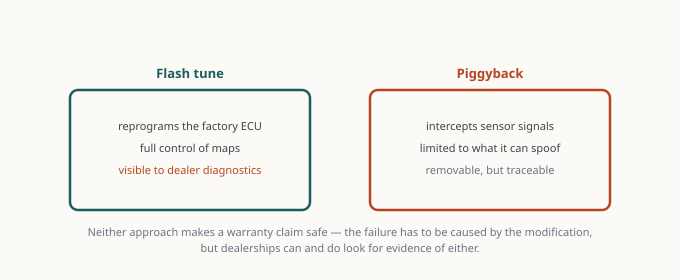

Tuning Explained: Flash, Piggyback, and Standalone — and the Warranty Conversation
Tuning is the highest-return modification per dollar on any turbocharged engine, and the one with the most consequences. This is the guide we'd want before spending money — not a sales pitch for a specific device.
Tuning is the highest-return modification per dollar on any turbocharged engine, and the one with the most consequences. This is the guide we’d want before spending money — not a sales pitch for a specific device.

The three approaches
ECU flash (reflash). A license and a device (or a bench flash at a shop) let you overwrite the factory calibration directly. This gives full control over fuel, ignition timing, boost targets, throttle mapping, and — on automatic cars — transmission shift logic. It’s the most capable option short of standalone, and the only one that changes how an automatic transmission behaves.
Common platforms do this with a handheld device that stores your stock map and lets you switch between tunes. Price is typically several hundred dollars for the device plus a license, then per-map costs.
Piggyback. An inline module that intercepts sensor signals and modifies them before the factory ECU sees them — adding fuel pressure, altering the manifold pressure signal, and so on. The factory ECU stays in place and unaware.
Advantages: removable in minutes, often undetectable at the dealer, cheaper, and preserves the factory calibration’s safety strategies. Disadvantages: the factory ECU is fighting the piggyback’s corrections, so it can learn around them over time; adaptation limits vary by platform; and it can’t change transmission logic at all. On some platforms piggybacks work extremely well, on others the ECU eventually trims them out.
Standalone. A complete replacement ECU. Total control, and total responsibility — cold start, idle quality, every emissions device, and every safety strategy now depend on your calibration. Appropriate for a dedicated race car or a heavily built engine. Not appropriate for a daily driver, and not something to learn on.
What to expect, honestly
We won’t give you a horsepower number, because it depends enormously on fuel octane, altitude, ambient temperature, the specific platform, and whether supporting hardware is installed. What is generally true:
- Turbo engines gain far more from a tune than naturally aspirated ones. On a turbo, the tune changes boost targets — a large lever. On an NA engine, the tune can only optimize fuel and timing — a small lever.
- Fuel quality is a hard constraint. A tune written for 93 octane will knock and pull timing on 91, and can be dangerous on lower grades. Never run a tune on fuel it wasn’t calibrated for.
- Supporting hardware matters. A tune on stock hardware is limited by the hardware. A tune plus a high-flow downpipe on a turbo car is where the real numbers live.
- The first gains feel dramatic; the next ones get expensive. Stage 1 to Stage 2 often costs several times more for a fraction of the additional gain.
The warranty conversation
This is the part the marketing skips. Be clear-eyed about it:
In the United States, the Magnuson-Moss Warranty Act generally prevents a manufacturer from voiding your entire warranty simply because an aftermarket part is installed. The burden is on the manufacturer to show that the aftermarket part caused the specific failure being denied. In practice:
- The ECU records things. Most modern ECUs log flash counters, boost history, and adaptation values. A dealer can often see that a calibration was changed. “They can’t tell” is usually false on a modern car.
- A related failure is the real risk. If you tune for more boost and the turbocharger fails, expect a fight. That’s a directly causally related failure, which is exactly what Magnuson-Moss doesn’t protect against.
- An unrelated failure should still be covered. A failed window regulator or infotainment unit has no causal relationship to your tune. You may still have to argue about it, but you should win.
- Warranty law varies by country. EU consumer protections differ, as do Korean (PIPA-adjacent consumer law) and other jurisdictions. Check your own jurisdiction rather than assuming US rules apply.
Practical advice: understand your platform’s detectability, keep your stock map and a way to restore it, keep receipts for every part, and know that restoration does not always erase a flash counter. If you can’t afford to fix something out of pocket, don’t tune it.
Supporting hardware order of operations
If the goal is real performance rather than just a number, the sequence matters:
- Verify the car is healthy first. Compression or leak-down test, fresh plugs, no existing fault codes. Tuning a sick engine makes it sicker.
- Tires and brakes. Worth saying out loud: more power without more grip and stopping power is a worse car.
- Intake and downpipe, if the platform benefits. On turbo cars the downpipe is usually the biggest hardware gain.
- The tune, calibrated for the hardware actually installed.
- Cooling, if you’ll use the power repeatedly — intercooler, oil cooler, transmission cooler.
Doing 4 before 3 means paying for a tune twice.
Data logging is not optional
A tune without logging is guesswork. Learn to log at minimum: boost pressure, air-fuel ratio, ignition timing and knock retard, intake air temperature, and fuel trims. Look for knock retard under load and fuel trims deviating far from zero — those are the signals that something is wrong before it becomes a failure.
Log a pull in third or fourth gear, in a safe location, within legal speeds. Review the data. If you don’t know what you’re looking at, find a tuner who will explain your log rather than just sell you the next stage.
The honest summary
- Piggyback if you want removable, modest gains and can’t risk the dealer relationship.
- ECU flash if you want the real result and accept the warranty risk. This is what most people actually want.
- Standalone only for a dedicated build with someone competent calibrating it.
Tune for the fuel you can actually buy, support it with the hardware the calibration assumes, log it, and be honest with yourself about the warranty trade. The power is real. So is the risk.